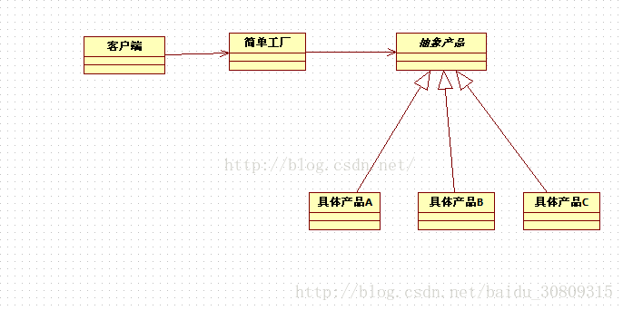
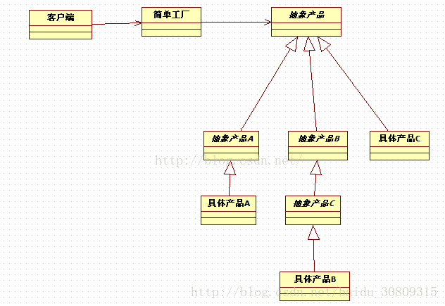

# 简单工厂
当看到 “new” 时，就会想到 “具体”，每当我们程序中 new 一个对象时，都会绑着一个具体类，代码绑着具体类会导致代码更脆弱，更缺乏弹性。
// Duck 父类还是要 new 一个具体的绿头鸭实例 | |
Duck duck = new MallardDuck(); |
当有一群相关的具体类时，类似下面代码。
Duck duck; | |
if ( picnic ){ | |
duck = new MallardDuck(); | |
}else if ( hunting ){ | |
duck = new DecoyDuck(); | |
}else if ( inBathTub ){ | |
duck = new RubberDuck(); | |
} |
这样的代码，一旦有变化或扩展，就必须打开这段代码进行检查和修改。系统会很难维护或更新，也容易犯错。
举个例子说明：
我们可以识别变化的方面，假设你有一个比萨店，作为店长，你可以这样写：
Pizza orderPizza( String type ){ | |
Pizza pizza; | |
// 根据比萨的类型，我们实例化正确的具体类，这里的所有比萨接口都要都必须实现 Pizza 接口 | |
if ( type.equals("cheese") ){ | |
pizza = new CheesePizza(); | |
}else if ( type.equals("greek") ){ | |
pizza = new GreekPizza(); | |
}else if ( type.equals("pepperoni") ){ | |
pizza = new PepperoniPizza(); | |
} | |
// 准备、烘烤、切片、装盒，每个 pizza 共有的操作步骤 | |
pizza.prepare(); | |
pizza.bake(); | |
pizza.cut(); | |
pizza.box(); | |
return pizza; | |
} |
随着时间的改变，当前菜单肯定会变化，如新增某个种类比萨。那我们需要 new 一个新的 Pizza 实现。此时我们又要添加一个 if...else...，导致了无法对修改关闭。
此时我们可以使用封装。将这些创建对象的代码封装起来，迁移到 orderPizza () 方法外，用于专职创建比萨。
此时，我们可以称这个新对象为 “工厂”。将 orderPizza () 方法称为该对象的客户。客户只需要关心从比萨工厂得到了一个比萨，而且这个比萨实现了 Pizza 接口。
package com.example.pattern.factory; | |
/** | |
* <p> | |
* <code>SimplePizzaFactory</code> | |
* </p> | |
* Description: 比萨简单工厂 | |
* | |
* @author Mcchu | |
* @date 2018/1/16 14:59 | |
*/ | |
public class SimplePizzaFactory { | |
public Pizza createPizza( String type ){ | |
Pizza pizza = null; | |
if ( type.equals("cheese") ){ | |
pizza = new CheesePizza(); | |
}else if ( type.equals("greek") ){ | |
pizza = new GreekPizza(); | |
}else if ( type.equals("pepperoni") ){ | |
pizza = new PepperoniPizza(); | |
} | |
return pizza; | |
} | |
} |
从表面上看，似乎只是把问题搬到了另一个对象罢了，问题依然存在，其实这里将代码抽离出来作为一个工厂，那么他此时不仅仅可以服务于上面的 orderPizza () 方法，就是说未来还可以在其他地方调用，服务于其他客户。
通常我们为了避免对象的创建来进行实例化，会利用静态方法定义一个简单的工厂，常称为静态工厂，这是一种技巧，但要注意，此时的缺点是不能通过继承来改变创建方法的行为。
下面我们重做 PizzaStore 类，即改变我们的客户代码，依仗我们的工厂来创建比萨。
package com.example.pattern.factory; | |
/** | |
* <p> | |
* <code>Test</code> | |
* </p> | |
* Description: | |
* | |
* @author Mcchu | |
* @date 2018/1/16 14:28 | |
*/ | |
public class PizzaStore { | |
SimplePizzaFactory factory; | |
public PizzaStore( SimplePizzaFactory factory ){ | |
this.factory = factory; | |
} | |
Pizza orderPizza( String type ){ | |
Pizza pizza; | |
pizza = factory.createPizza(type); | |
pizza.prepare(); | |
pizza.bake(); | |
pizza.cut(); | |
pizza.box(); | |
return pizza; | |
} | |
// ... ... | |
} |
此时 SimplePizzaStore 就是一个简单工厂，注意，简单工厂其实不是一个设计模式，反而更像是一种编程习惯，不要误认为是 “工厂模式”
附：
简单工厂说明图：来自 CSDN
注意上面只给出了客户和简单工厂，抽象产品其实就是指上面各种具体比萨的所实现的抽象类 Pizza。
在这里说明一下：在设计模式中，所谓的 “实现一个接口” 并 “不一定” 表示 “写一个类，并利用 implement 关键字来实现某个 java 接口”。“实现一个接口” 泛指 “实现某个超类型（可以是类或接口的某个方法）”

实际应用中，抽象可能是多层次的，如
